Uncertainty in QSAR modeling¶
[1]:
%matplotlib inline
import ml_uncertainty as plu
import pandas as pd
import numpy as np
import matplotlib.pyplot as plt
import matplotlib.patches
import sklearn.cross_decomposition
import sklearn.model_selection as skcv
import sklearn.preprocessing as skpp
import sklearn.metrics as skmet
import math
[2]:
def plot_bootstrap_pls(train_data,y_train,test_data=None,y_test=None,axes_row=None,train_colors=None,test_colors=None,group=False):
num_train = len(y_train)
num_test = 0
if test_data is not None:
num_test = len(y_test)
num_total = num_train + num_test
if train_colors is None:
train_colors = ['w'] * (num_train)
train_colors = np.array(train_colors)
train_colors[y_train > 0] = 'k'
if test_data is not None:
if test_colors is None:
test_colors = ['w'] * (num_test)
test_colors = np.array(test_colors)
test_colors[y_test > 0] = 'k'
errbar_dict = dict(fmt='none',ecolor='k',capsize=5,zorder=-100,lw=2)
#Get the median of the bootstrap data
train_predict = np.median(train_data,axis=1)
#Confidence limits and errorbar widths
ci_upper_train = np.percentile(train_data,97.5,axis=1)
ci_lower_train = np.percentile(train_data,2.5,axis=1)
error_train = (ci_upper_train - ci_lower_train)/2
if test_data is not None:
test_predict = np.median(test_data,axis=1)
ci_upper_test = np.percentile(test_data,97.5,axis=1)
ci_lower_test = np.percentile(test_data,2.5,axis=1)
error_test = (ci_upper_test - ci_lower_test)/2
#Class boundary value and line formatting
cv = plu.estimate_class_boundary(train_predict,y_train)
class_boundary_dict = dict(color='k',ls=':',lw=2,zorder=-100)
#Pearson R value
#Pearson R on the test data if available, otherwise on the training data
if test_data is not None:
r2=skmet.r2_score(y_test,test_predict)
#r,p = scipy.stats.pearsonr(y_test,test_predict)
residual,err,mse = plu.get_residual_stats(y_test,test_predict)
else:
r2=skmet.r2_score(y_train,train_predict)
#r,p = scipy.stats.pearsonr(y_train,train_predict)
residual,err,mse = plu.get_residual_stats(y_train,train_predict)
#r2 = r ** 2
rstring = '$r^2$ = {: 5.3f}'.format(r2)
#Misclassification probabilities and training set confidences
prob_zero_train = plu.get_probabilities(class_predicted=train_predict,data_error=error_train,class_value=cv)
train_assigned = np.zeros_like(train_predict)
train_assigned[train_predict > cv] = 1
misclass,misclass_mask_train = plu.find_misclassified(true_class=y_train,assigned_class=train_assigned)
train_confidence = plu.misclass_probability(prob_zero_train,misclass_mask_train)
if test_data is not None:
prob_zero = plu.get_probabilities(class_predicted=test_predict,data_error=error_test,class_value=cv)
test_assigned = np.zeros_like(test_predict)
test_assigned[test_predict > cv] = 1
misclass_test,misclass_mask_test = plu.find_misclassified(true_class=yt,assigned_class=test_assigned)
test_confidence = plu.misclass_probability(prob_zero,misclass_mask_test)
train_order = np.argsort(prob_zero_train)
if test_data is not None:
test_order = np.argsort(prob_zero)
if group:
boot_all = train_data
class_predict = train_predict
colors = train_colors
if test_data is not None:
boot_all = np.concatenate((boot_all,test_data))
class_predict = np.concatenate((class_predict,test_predict))
colors = np.concatenate((train_colors,test_colors))
else:
boot_all = train_data[train_order]
class_predict = train_predict[train_order]
colors = train_colors[train_order]
if test_data is not None:
boot_all = np.concatenate((boot_all,test_data[test_order]))
class_predict = np.concatenate((class_predict,test_predict[test_order]))
colors = np.concatenate((train_colors,test_colors[test_order]))
#Confidence limits on the full set
ci_upper = np.percentile(boot_all,97.5,axis=1)
ci_lower = np.percentile(boot_all,2.5,axis=1)
error = (ci_upper - ci_lower)/2
#Split axes
ax = axes_row[0]
mcax = axes_row[1]
#Class value plot
#Axis limits for the class value plot
ax.set_xlim(0,num_total)
ax.set_ylim(-1,2)
ax.set_yticks([-1,0,1,2])
ax.set_ylabel('Predicted class, $XW^*Q^T$',size=15)
ax.set_xlabel('Sample index (a.u.)',size=15)
ax.set_xticks([])
#Scatter plot and error bar plots for predicted class values
plsplot = ax.scatter(np.arange(num_total),class_predict,
color=colors,edgecolors='k',s=30)
plserr = ax.errorbar(np.arange(num_total),class_predict,
yerr=error,color='k',**errbar_dict)
pls_class_boundaryy = ax.axhline(y=cv,**class_boundary_dict)
#Misclassification probability plot
proby_centerline = mcax.axvline(x=0.5,**class_boundary_dict)#mcax.plot((0.5,0.5),(-1.5,2.5),'k:')
class_centerline = mcax.axhline(y=cv,**class_boundary_dict) #mcax.plot((-1,2),(cv,cv),'k:')
#Misclassification probabilities
#Training set correct classification
mcax.scatter(
train_confidence[~misclass_mask_train],
train_predict[~misclass_mask_train],
label='Correct Train',color='w',edgecolor='b')
mcax.scatter(
1-train_confidence[misclass_mask_train],
train_predict[misclass_mask_train],
label='Incorrect Train',color='w',edgecolor='r')
if test_data is not None:
mcax.scatter(
test_confidence[~misclass_mask_test],
test_predict[~misclass_mask_test],
label='Correct Test',color='b')
mcax.scatter(
1-test_confidence[misclass_mask_test],
test_predict[misclass_mask_test],
label='Incorrect Test',color='r')
mcax.set_xlim(-0.05,1.05)
#mcax.set_ylim(-0.05,1.05)
mcax.set_xticks([0,1])
#mcax.set_yticks([0,0.5,1])
mcax.text(0.95,0.95,rstring,ha='right',va='top',transform=mcax.transAxes)
mcax.set_xlabel(r'$\mathsf{Pr}_\mathsf{misclass}$',size=15)
[3]:
#Read the data into a Pandas data frame
testdata = pd.read_excel('./Dataset.xlsx',skipfooter=1,index_col=[0])
#External validation data
validationdata = pd.read_excel('./Dataset.xlsx',sheet_name=2)
[4]:
#Choose the variables for use in this study
variables = [
'SpMax_L',
'F04[C-N]',
'C%',
'nO',
'HyWi_B(m)',
'LOC',
'SM6_L',
'F03[C-O]',
'Me',
'Mi',
'nN-N',
'nArNO2',
'nCRX3',
'SpPosA_B(p)',
'nCIR',
'B01[C-Br]',
'B03[C-Cl]',
'N-073',
'SpMax_A',
'Psi_i_1d',
'B04[C-Br]',
'SdO',
'TI2_L']
[5]:
#Test and calibration data
alldata = testdata[variables].values
#External validation data
allvdata = validationdata[variables].values
#Identify the training set
train_mask = testdata['Status'].values == 'Train'
[6]:
#Autoscale the X data for partial least squares
complete_data = np.concatenate((alldata,allvdata))
data_scaler = skpp.StandardScaler()
data_scaler.fit(complete_data)
alldata_scale = data_scaler.transform(alldata)
allvdata_scale = data_scaler.transform(allvdata)
[7]:
#Split the data into the training and test sets
train_data_scale = alldata_scale[train_mask]
test_data_scale = alldata_scale[~train_mask]
#Determine the size of the training, test, and external validation sets
num_train = train_data_scale.shape[0]
num_test = test_data_scale.shape[0]
num_valid = allvdata_scale.shape[0]
[8]:
labeler = skpp.LabelBinarizer()
[9]:
testdata['Class'].values[train_mask].shape
[9]:
(837,)
[10]:
labeler.fit_transform(['RB','NRB'])
[10]:
array([[1],
[0]])
[11]:
labeler.classes_
[11]:
array(['NRB', 'RB'], dtype='<U3')
[12]:
class_y_train = labeler.transform(testdata['Class'].values[train_mask])
class_y_test = labeler.transform(testdata['Class'].values[~train_mask])
class_y_valid = labeler.transform(validationdata['class'].values)
[13]:
#Create the PLS regressors and cross_validation structure
cv = sklearn.model_selection.KFold(n_splits=6)
PLS_dict = dict(n_components=5,scale=False,max_iter=1500)
PLS_regressor = sklearn.cross_decomposition.PLSRegression
[14]:
samples = 1000
PLS_bootstrap = plu.bootstrap_estimator(estimator=PLS_regressor,estimator_kw=PLS_dict,
X=train_data_scale,y=class_y_train,
samples=samples,cv=cv,
)
[15]:
PLS_bootstrap.fit()
[16]:
#Calibration set
ypred,ypboot,bounds,ci_boot, = PLS_bootstrap.bootstrap_uncertainty_bounds()
error_train = ci_boot.mean(axis=0)
#Validation set
ypval,yvboot,vbounds,ci_test = PLS_bootstrap.bootstrap_uncertainty_bounds(test_data_scale)
error_test = ci_test.mean(axis=0)
#External validation
ypex,yexboot,exbounds,ci_valid = PLS_bootstrap.bootstrap_uncertainty_bounds(allvdata_scale)
error_valid = ci_valid.mean(axis=0)
[17]:
class_value = plu.estimate_class_boundary(ypred,class_y_train)
print(class_value)
0.4034978031213715
[18]:
#class_predicted_train = np.squeeze(ypred)
class_assigned_train,class_predicted_train = plu.class_assignment(data=ypred)
class_assigned_test,class_predicted_test = plu.class_assignment(data=ypval)
class_assigned_valid,class_predicted_valid = plu.class_assignment(data=ypex)
[19]:
class_assigned_train.shape
[19]:
(837, 1)
[20]:
class_predicted_train.shape
[20]:
(837, 1)
[21]:
probabilities_dict = dict(class_value=class_value)
probability_zero_train = plu.get_probabilities(class_predicted=ypred,
data_error=error_train,
**probabilities_dict)
probability_zero_test = plu.get_probabilities(class_predicted=ypval,
data_error=error_test,
**probabilities_dict)
probability_zero_valid = plu.get_probabilities(class_predicted=ypex,
data_error=error_valid,
**probabilities_dict)
misclass_train,misclass_mask_train = plu.find_misclassified(true_class=class_y_train,
assigned_class=class_assigned_train.T)
misclass_test,misclass_mask_test = plu.find_misclassified(true_class=class_y_test,
assigned_class=class_assigned_test.T)
misclass_valid,misclass_mask_valid = plu.find_misclassified(true_class=class_y_valid,
assigned_class=class_assigned_valid.T)
train_confidence = plu.misclass_probability(probability_zero_train,misclass_mask_train)
test_confidence = plu.misclass_probability(probability_zero_test,misclass_mask_test)
valid_confidence =plu.misclass_probability(probability_zero_valid,misclass_mask_valid)
[22]:
sorted_indices_train = np.argsort(probability_zero_train,axis=0)
sorted_indices_test = np.argsort(probability_zero_test,axis=0)
sorted_indices_valid = np.argsort(probability_zero_valid,axis=0)
inverse_sort_train = np.argsort(sorted_indices_train)
inverse_sort_test = np.argsort(sorted_indices_test)
inverse_sort_valid = np.argsort(sorted_indices_valid)
[23]:
errbar_dict = dict(fmt='none',ecolor='k',capsize=5,zorder=-100,lw=2)
boundary_dict = dict(color='r',ls='--',lw='5',zorder=-100)
fs = (10,12)
[24]:
def plot_classification(axis,
x_indices=None,y_data=None,y_err=None,
colors=None,class_value=0.5,probability_zero=None,
interesting_points=None,fig_label=None,ylim=None):
ellipse_dict = dict(height=1,facecolor='none',edgecolor='#88aa88',linestyle='--',lw=1,zorder=-200)
errbar_dict = dict(fmt='none',ecolor='#777777',capsize=5,zorder=-100,lw=2)
boundary_dict = dict(color='r',ls='--',lw='5',zorder=-100)
probdict = dict(color = 'w', edgecolor='k' ,marker = 'v',s=1,zorder=-100000)
num_vars = len(x_indices)
pls_class_boundaryy = axis.axhline(y=class_value,**boundary_dict)
plserr = axis.errorbar(np.arange(num_vars),y_data[x_indices],
yerr=y_err[x_indices],**errbar_dict)
plsplot = axis.scatter(np.arange(num_vars),y_data[x_indices],
color=colors[x_indices],
edgecolor='k')
if probability_zero is not None:
probax = axis.twinx()
plsconf = probax.scatter(np.arange(num_vars),probability_zero[x_indices],**probdict)
if interesting_points is not None:
inverse_sort = np.argsort(x_indices) #Get the order in which the x indices have been sorted
for interest_number,point in enumerate(interesting_points):
x_location = inverse_sort[point]
y_location = y_data[point]
y_offset = (-1)**(interest_number)*0.6 #offset the interesting point label from the point itself. Alternate between up and down to avoid conflicts
y_offset -= 0.2 * interest_number/2
ellipse_width = num_vars / 40.0
ellipse_interesting = matplotlib.patches.Ellipse(xy=[x_location,y_location],width=ellipse_width,**ellipse_dict)
plsax.add_artist(ellipse_interesting)
#plsax.text(x_location,y_location+0.7-(interest_number/8.0),str(point),ha='center')
axis.text(x_location,y_location+y_offset,str(point+1),
ha='center',bbox=dict(edgecolor='w',facecolor='w',alpha=0.8),zorder=100)#,alpha=0.2))
axis.set_xlim(0,num_vars)
if ylim is not None:
axis.set_ylim(ylim)
if fig_label is not None:
axis.text(0.05,0.95,fig_label,size=12,transform=axis.transAxes,ha='left',va='top')
axis.set_xticklabels([])
[25]:
color_train = np.array(['w']*num_train)
color_train[misclass_mask_train] = ['k']
color_test = np.array(['w']*num_test)
color_test[misclass_mask_test] = ['k']
color_valid = np.array(['w']*num_valid)
color_valid[misclass_mask_valid] = ['k']
plsfig = plt.figure(figsize=(10,12),facecolor='w')
plsfig.text(0.07,0.5,u'Predicted class, $Y_{PLSDA}$',size=15,ha='center',va='center',
rotation='vertical')
plsfig.text(0.95,0.5,u'Probability of assignment to NRB, $P_{0}$',size=15,ha='center',
va='center',rotation=-90)
plsax = plsfig.add_subplot(311)
plot_classification(plsax,
x_indices=sorted_indices_train,
y_data=class_predicted_train,y_err=error_train,
colors=color_train,
class_value=class_value,
interesting_points=None,
probability_zero=probability_zero_train,fig_label='Calibration',
ylim=(-1,2))
black_dot = matplotlib.lines.Line2D([],[],color='k',marker='o',
label='Correct classification',linestyle='none')
white_dot = matplotlib.lines.Line2D([],[],color='k',marker='o',markerfacecolor='w',
label='Incorrect classification',linestyle='none')
black_scatters = matplotlib.lines.Line2D([],[],color='k',marker='o',
label='$P_0$',linestyle='none',markersize=1)
leg = plsax.legend(handles=[black_dot,white_dot,black_scatters],
frameon=True,framealpha=1,numpoints=1,loc='lower left')
leg.get_frame().set_edgecolor('w')
plsax = plsfig.add_subplot(312)
plot_classification(plsax,
x_indices=sorted_indices_test,
y_data=class_predicted_test,y_err=error_test,
colors=color_test,
class_value=class_value,
interesting_points=None,
probability_zero=probability_zero_test,fig_label='Validation',
ylim=(-1,2))
plsax = plsfig.add_subplot(313)
plot_classification(plsax,
x_indices=sorted_indices_valid,
y_data=class_predicted_valid,y_err=error_valid,
colors=color_valid,
class_value=class_value,
interesting_points=None,
probability_zero=probability_zero_valid,fig_label='External',
ylim=(-1,2))
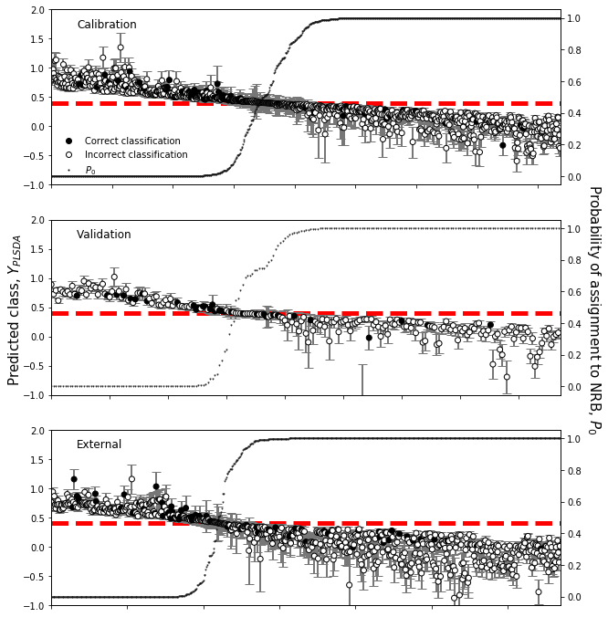
[26]:
import scipy
[27]:
gridspec_kw = dict(width_ratios=[4,1])
numplots = 3
fig_height = 2
plsfig,axes = plt.subplots(numplots,2,figsize=(10,fig_height*numplots),facecolor='w',
sharex=False,sharey=True,gridspec_kw=gridspec_kw)
plsfig.text(0.0,0.5,'Predicted class',
ha='center',va='center',rotation='vertical',size=20)
plsfig.text(0.9,0.0,r'$\mathsf{Pr}_\mathsf{misclass}$',ha='center',va='center',size=20)
plsfig.text(0.4,0.0,'Sample index (a.u.)',ha='center',va='center',size=20)
# plsfig.text(0.95,0.5,u'Probability of assignment to NRB, $P_{0}$',size=15,ha='center',
# va='center',rotation=-90)
boot_sets = [ypboot,yvboot,yexboot]
classes = [class_y_train,class_y_test,class_y_valid]
indices = [sorted_indices_train,sorted_indices_test,sorted_indices_valid]
colors = [color_train,color_test,color_valid]
for ax_row,yp,ytrue,indx,colr in zip(axes,boot_sets,classes,indices,colors):
plot_bootstrap_pls(np.squeeze(yp).T[indx],
np.squeeze(ytrue)[indx],
axes_row=ax_row,
train_colors=colr[indx],
group=False)
ax_row[0].set_yticks([])
ax_row[1].set_xticks([])
ax_row[0].set_ylabel('')
ax_row[0].set_xlabel('')
ax_row[1].set_xlabel('')
plsfig.tight_layout()
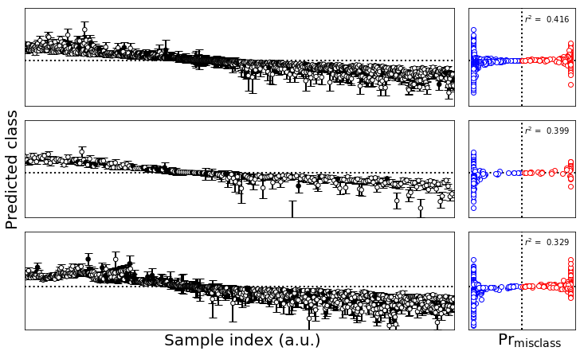
[28]:
import plot_utils
[52]:
wt = 5
gridspec_kw = dict(width_ratios=[wt-1,1])
numplots = 3
fig_height = 2
#plsfig,axes = plt.subplots(numplots,2,figsize=(10,fig_height*numplots),facecolor='w',
# sharex=False,sharey=True,gridspec_kw=gridspec_kw)
ps=(wt,2)
gridspec_kw['hspace'] = 0
gridspec_kw['wspace'] = 0.0
plsfig,axes = plot_utils.make_grid_plot(numplots,2,plotsize=ps,xlabel_buffer=0.4,ylabel_buffer=0.6,
sharex=False,sharey=True,gridspec_kw=gridspec_kw,add_buffer=True,
ylabel='Predicted class',label_size=20
)
sidx_x = (wt-1)/(2*wt)
prmc_x = (wt-0.5)/(wt)
plsfig.text(prmc_x,0.0,r'$\mathsf{Pr}_\mathsf{misclass}$',ha='center',va='center',size=20)
plsfig.text(sidx_x,0.0,'Sample index (a.u.)',ha='center',va='center',size=20)
# plsfig.text(0.95,0.5,u'Probability of assignment to NRB, $P_{0}$',size=15,ha='center',
# va='center',rotation=-90)
boot_sets = [ypboot,yvboot,yexboot]
classes = [class_y_train,class_y_test,class_y_valid]
indices = [sorted_indices_train,sorted_indices_test,sorted_indices_valid]
colors = [color_train,color_test,color_valid]
labels = ['Calbration','Validation','External']
for ax_row,yp,ytrue,indx,colr,label in zip(axes,boot_sets,classes,indices,colors,labels):
plot_bootstrap_pls(np.squeeze(yp).T,
np.squeeze(ytrue),
axes_row=ax_row,
train_colors=colr,
group=False)
ax_row[0].set_yticks([0,1])
ax_row[0].set_yticklabels(['NRB','RB'])
ax_row[1].set_xticks([])
ax_row[0].set_ylabel('')
ax_row[0].set_xlabel('')
ax_row[1].set_xlabel('')
ax_row[0].text(0.95,0.9,label,ha='right',va='top',transform=ax_row[0].transAxes)
#plsfig.tight_layout()
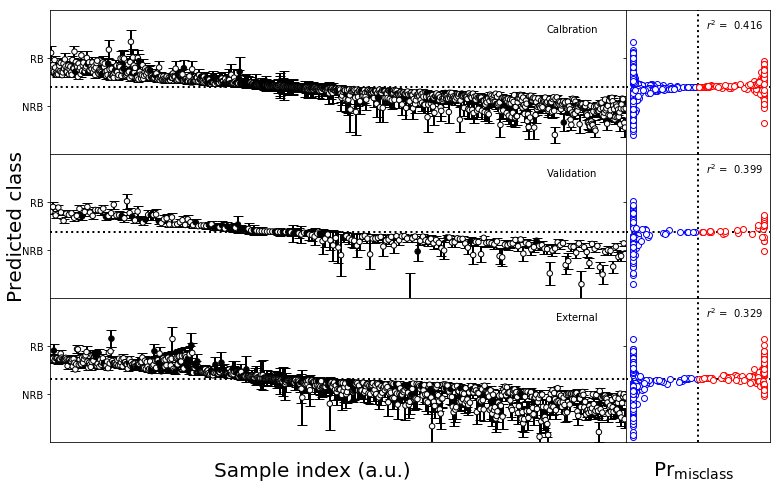
[30]:
#Make the figure
fs1 = (10,4)
gridspec_kw = dict(width_ratios=[4,1])
fig,axes = plt.subplots(1,2,figsize=fs1,sharex='col',sharey=True,gridspec_kw=gridspec_kw)
plot_bootstrap_pls(np.squeeze(ypboot).T[sorted_indices_train],
np.squeeze(class_y_train)[sorted_indices_train],
axes_row=axes,
train_colors=color_train[sorted_indices_train],
group=False)
fig.tight_layout()
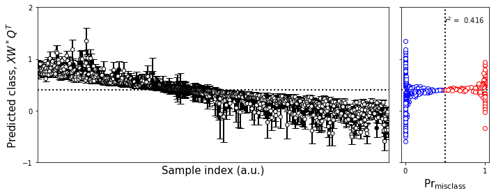
[31]:
#Make the figure
fs1 = (10,4)
gridspec_kw = dict(width_ratios=[4,1])
fig,axes = plt.subplots(1,2,figsize=fs1,sharex='col',sharey=True,gridspec_kw=gridspec_kw)
plot_bootstrap_pls(np.squeeze(yvboot).T[sorted_indices_test],
np.squeeze(class_y_test)[sorted_indices_test],
axes_row=axes,
train_colors=color_test[sorted_indices_test],
group=False)
fig.tight_layout()
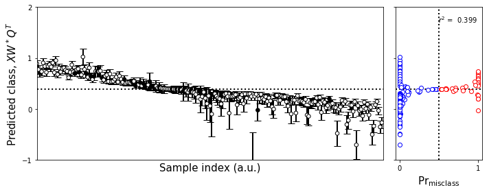
[32]:
#Make the figure
fs1 = (10,4)
gridspec_kw = dict(width_ratios=[4,1])
fig,axes = plt.subplots(1,2,figsize=fs1,sharex='col',sharey=True,gridspec_kw=gridspec_kw)
plot_bootstrap_pls(np.squeeze(yexboot).T[sorted_indices_valid],
np.squeeze(class_y_valid)[sorted_indices_valid],
axes_row=axes,
train_colors=color_valid[sorted_indices_valid],
group=False)
fig.tight_layout()
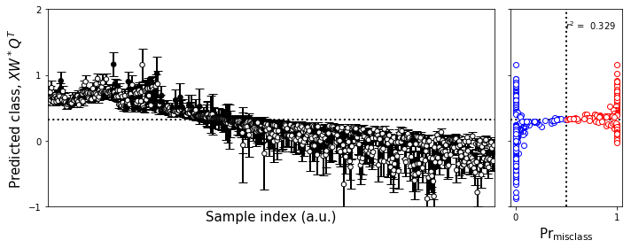
[33]:
train_plot_dict=dict(x_indices=sorted_indices_train,
y_data=class_predicted_train,y_err=error_train,
colors=color_train,
class_value=class_value,
interesting_points=None,
probability_zero=probability_zero_train,fig_label='Calibration',
ylim=(-1,2))
test_plot_dict=dict(x_indices=sorted_indices_test,
y_data=class_predicted_test,y_err=error_test,
colors=color_test,
class_value=class_value,
interesting_points=None,
probability_zero=probability_zero_test,fig_label='Validation',
ylim=(-1,2))
valid_plot_dict=dict(x_indices=sorted_indices_valid,
y_data=class_predicted_valid,y_err=error_valid,
colors=color_valid,
class_value=class_value,
interesting_points=None,
probability_zero=probability_zero_valid,fig_label='External',
ylim=(-1,2))
[34]:
numplots = 3
fig_height = 3
plsfig,axes = plt.subplots(numplots,1,figsize=(10,fig_height*numplots),facecolor='w')
plsfig.text(0.07,0.5,u'Predicted class, $Y_{PLSDA}$',size=15,ha='center',va='center',
rotation='vertical')
plsfig.text(0.95,0.5,u'Probability of assignment to NRB, $P_{0}$',size=15,ha='center',
va='center',rotation=-90)
for ax,class_dict in zip(axes,[train_plot_dict,test_plot_dict,valid_plot_dict]):
plot_classification(ax,**class_dict)
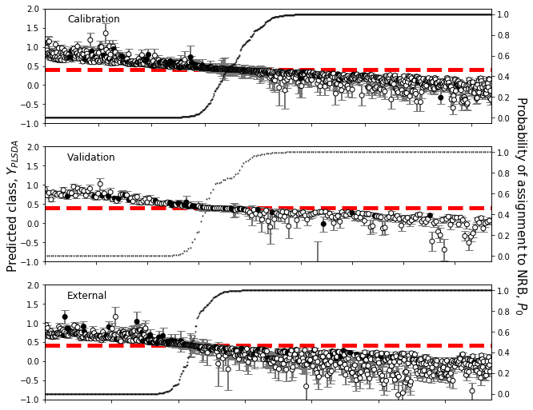
[35]:
plsfig = plt.figure(figsize=(6,4),dpi=300,facecolor='w')
plsax = plsfig.add_axes([0,0,1,1])
proby_centerline = plsax.plot((-1.5,1.5),(0.5,0.5),'k--')
class_centerline = plsax.plot((class_value,class_value),(-1,2),'k--')
plsax.scatter(
class_predicted_train[~misclass_mask_train],
train_confidence[~misclass_mask_train],
label='Correct Calibration',color='b')
plsax.scatter(
class_predicted_train[misclass_mask_train],
1-train_confidence[misclass_mask_train],
label='Incorrect Calibration',color='r',marker='s')
plsax.scatter(
class_predicted_test[~misclass_mask_test],
test_confidence[~misclass_mask_test],
label='Correct Validation',color='w',edgecolors='b')
plsax.scatter(
class_predicted_test[misclass_mask_test],
1-test_confidence[misclass_mask_test],
label='Incorrect Validation',color='w',edgecolors='r',marker='s')
plsax.scatter(
class_predicted_valid[~misclass_mask_valid],
valid_confidence[~misclass_mask_valid],
label='Correct External',color='w',edgecolors='#8888ff',marker=(5,1))
plsax.scatter(
class_predicted_valid[misclass_mask_valid],
1-valid_confidence[misclass_mask_valid],
label='Incorrect External',color='w',edgecolors='#ff8888',marker=(5,0))
plsax.set_xlim(-1.5,1.5)
plsax.set_ylim(-0.05,1.05)
plsax.legend(loc='right',bbox_to_anchor=(0.5,0.5))
plsax.set_xlabel(u'Predicted class, $Y_{PLSDA}$',size=15)
ylabel= plsax.set_ylabel('Misclassification probability, $P_{misclass}$',size=15)
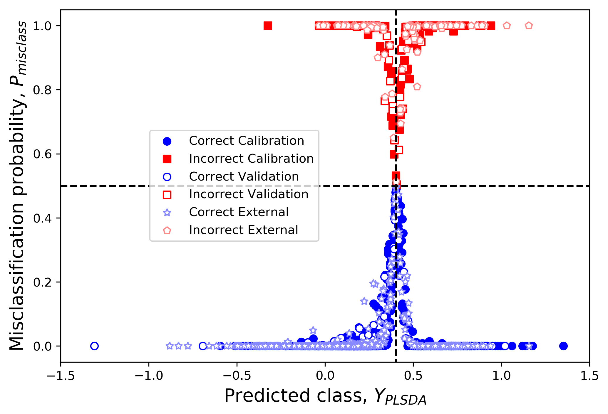
[ ]:
[36]:
loadings_boot = [est.x_loadings_ for est in PLS_bootstrap.estimators_]
loadings_boot = np.stack(loadings_boot,axis=0)
T_train,T_train_boot = PLS_bootstrap.transform(train_data_scale,with_boot=True)
T_test,T_test_boot = PLS_bootstrap.transform(test_data_scale,with_boot=True)
[37]:
T_train.shape
[37]:
(837, 5)
[38]:
plsfig,axes = plt.subplots(1,2,figsize=(12,6))
P = PLS_bootstrap.base_estimator_.x_loadings_
T = PLS_bootstrap.base_estimator_.x_scores_
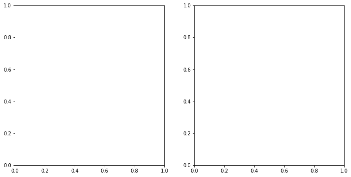
[39]:
RB_mask = np.squeeze(class_y_train == 1)
RB_mask_test = np.squeeze(class_y_test == 1)
RB_mask_valid = np.squeeze(class_y_valid == 1)
[40]:
RB_mask.shape
[40]:
(837,)
[41]:
T_train[np.squeeze(RB_mask)]
[41]:
array([[-2.47966899, -0.12866677, 0.12033809, -0.7542003 , -0.99207342],
[-2.17526113, -0.29336931, 0.82120696, 0.18616505, -0.25128187],
[-3.2490376 , 0.76486406, 0.15858835, 0.62913906, -1.13184015],
...,
[ 2.27938394, 1.58749114, 1.77122412, 0.96928712, 0.46846473],
[-1.52698621, 2.85984187, -1.43736162, 0.85167971, -1.84949751],
[-1.54237317, 2.66386557, -1.43961666, 0.82674004, -1.66986465]])
[42]:
plsfig,axes = plt.subplots(1,2,figsize=(12,6))
plsax = axes[0]
plsax.scatter(T_train[RB_mask,0],-T_train[RB_mask,1],c='k',edgecolors='none',s=30,label="Calibration RB")
plsax.scatter(T_train[~RB_mask,0],-T_train[~RB_mask,1],marker='v',c='r',edgecolors='none',s=30,label="Calibration NRB")
plsax.scatter(T_test[RB_mask_test,0],-T_test[RB_mask_test,1],c='w',edgecolors='k',s=30,label="Validation RB")
plsax.scatter(T_test[~RB_mask_test,0],-T_test[~RB_mask_test,1],marker='v',c='w',edgecolors='r',s=30,label="Validation NRB")
ax = axes[1]
ax.scatter(P[:,0],-P[:,1],s=0)
ax.axvline(x=0,color='k',ls=':')
ax.axhline(y=0,color='k',ls=':')
for loading in loadings_boot:
ax.scatter(loading[:,0],-loading[:,1],s=1,color='c')
for varnum,var in enumerate(variables):
pass
ax.text(P[varnum,0],-P[varnum,1],var,ha='center',va='center',size=8,
bbox=dict(facecolor='w',alpha=0.8))
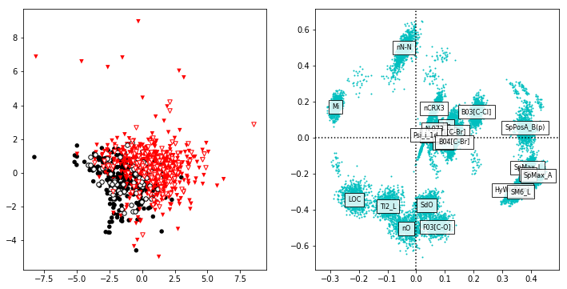
[43]:
import sklearn.ensemble as skens
[44]:
bagger = skens.BaggingRegressor(base_estimator=PLS_regressor(5,False,1500),n_estimators=10000)
[45]:
PLS_dict.values()
[45]:
dict_values([5, False, 1500])
[46]:
bagger.fit(train_data_scale,class_y_train.ravel())
[46]:
BaggingRegressor(base_estimator=PLSRegression(copy=True, max_iter=1500, n_components=5, scale=False,
tol=1e-06),
bootstrap=True, bootstrap_features=False, max_features=1.0,
max_samples=1.0, n_estimators=10000, n_jobs=1, oob_score=False,
random_state=None, verbose=0, warm_start=False)
[47]:
y = bagger.predict(train_data_scale)
[48]:
y = np.stack([est.predict(train_data_scale) for est in bagger.estimators_])
[49]:
y.shape
[49]:
(10000, 837, 1)
[50]:
fig,axes = plt.subplots(1,2,figsize=fs1,sharex='col',sharey=True,gridspec_kw=gridspec_kw)
plot_bootstrap_pls(np.squeeze(y).T,
np.squeeze(class_y_train),
axes_row=axes,
train_colors=color_train,
group=False)
fig.tight_layout()
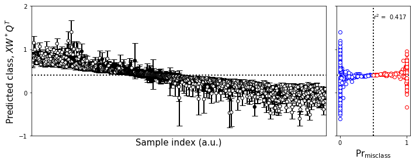
[51]:
#Make the figure
fs1 = (10,4)
gridspec_kw = dict(width_ratios=[4,1])
fig,axes = plt.subplots(1,2,figsize=fs1,sharex='col',sharey=True,gridspec_kw=gridspec_kw)
plot_bootstrap_pls(np.squeeze(ypboot).T,
np.squeeze(class_y_train),
axes_row=axes,
train_colors=color_train,
group=False)
fig.tight_layout()
[63]:
#Make the figure
fs1 = (5,2)
gridspec_kw = dict(width_ratios=[4,1])
gridspec_kw['hspace'] = 0
gridspec_kw['wspace'] = 0.0
fig,axes = plt.subplots(1,2,figsize=fs1,sharex='col',sharey=True,gridspec_kw=gridspec_kw)
plot_bootstrap_pls(np.squeeze(ypboot).T,
np.squeeze(class_y_train),
axes_row=axes,
train_colors=color_train,
group=False)
axes[0].set_yticks([0,1])
axes[0].set_yticklabels(['NRB','RB'])
axes[1].set_xticks([])
axes[0].set_ylabel('')
axes[0].set_xlabel('')
axes[1].set_xlabel('')
for text in axes[1].texts:
text.set_visible(False)
fig.tight_layout()
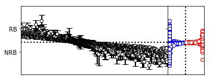
[58]:
wt = 3
gridspec_kw = dict(width_ratios=[wt-1,1])
numplots = 2
fig_height = 2
#plsfig,axes = plt.subplots(numplots,2,figsize=(10,fig_height*numplots),facecolor='w',
# sharex=False,sharey=True,gridspec_kw=gridspec_kw)
ps=(wt,2)
gridspec_kw['hspace'] = 0
gridspec_kw['wspace'] = 0.0
plsfig,axes = plot_utils.make_grid_plot(numplots,2,plotsize=ps,xlabel_buffer=0.4,ylabel_buffer=0.7,
sharex=False,sharey=True,gridspec_kw=gridspec_kw,add_buffer=True,
ylabel='Predicted class',label_size=20
)
sidx_x = (wt-1)/(2*wt)
prmc_x = (wt-0.5)/(wt)
plsfig.text(prmc_x,0.0,r'$\mathsf{Pr}_\mathsf{misclass}$',ha='center',va='bottom',size=20)
plsfig.text(sidx_x,0.0,'Sample index (a.u.)',ha='center',va='bottom',size=20)
# plsfig.text(0.95,0.5,u'Probability of assignment to NRB, $P_{0}$',size=15,ha='center',
# va='center',rotation=-90)
boot_sets = [ypboot,y,]
classes = [class_y_train,class_y_test,class_y_valid]
indices = [sorted_indices_train,sorted_indices_test,sorted_indices_valid]
colors = [color_train,color_test,color_valid]
labels = ['Residual bootstrap','Bootstrap']
for ax_row,yp,ytrue,indx,colr,label in zip(axes,boot_sets,classes,indices,colors,labels):
plot_bootstrap_pls(np.squeeze(yp).T,
np.squeeze(class_y_train),
axes_row=ax_row,
train_colors=color_train,
group=True)
ax_row[0].set_yticks([0,1])
ax_row[0].set_yticklabels(['NRB','RB'])
ax_row[1].set_xticks([])
ax_row[0].set_ylabel('')
ax_row[0].set_xlabel('')
ax_row[1].set_xlabel('')
ax_row[0].text(0.95,0.9,label,ha='right',va='top',transform=ax_row[0].transAxes)
#plsfig.tight_layout()
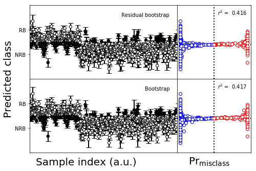
[ ]: